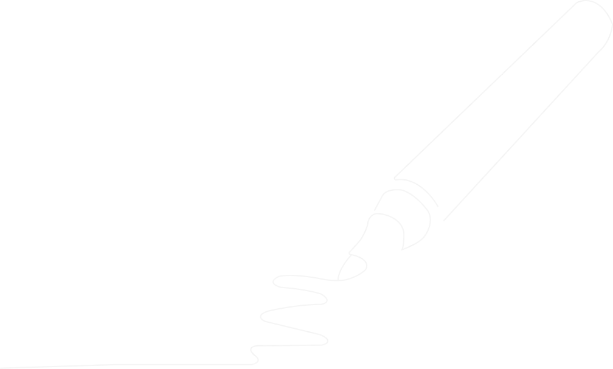

Figma Learning New Skills
Figma Learning Skills is mijn persoonlijke oefenlab om mijn visuele en interactieve vaardigheden in Figma te versterken. Hier experimenteer ik met de Pen Tool, vectorillustraties, line icons en micro-interactions.
Ik oefen onder meer met boolean operations, component states en Smart Animate. Deze verzameling toont mijn technische groei in Figma om eigen assets te bouwen voor toekomstige UX/UI-projecten.
